ILLUSTRATED USER GUIDE
Managed Availability
Control access to course sections, activities, and resources from one Moodle dashboard. Every image in this guide comes from the real plugin in a fictional demonstration course.
1. Enable management in a course
A user with availability/managed:configure opens More → Managed availability configuration. Existing courses should normally start open; starting closed is suitable when release is being prepared from scratch.
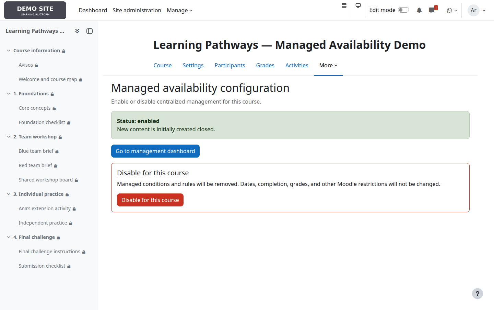
2. Understand the dashboard
Each card represents a course section. State buttons open the full editor; quick actions open to everyone or close to everyone immediately. An already satisfied action is grey and disabled.
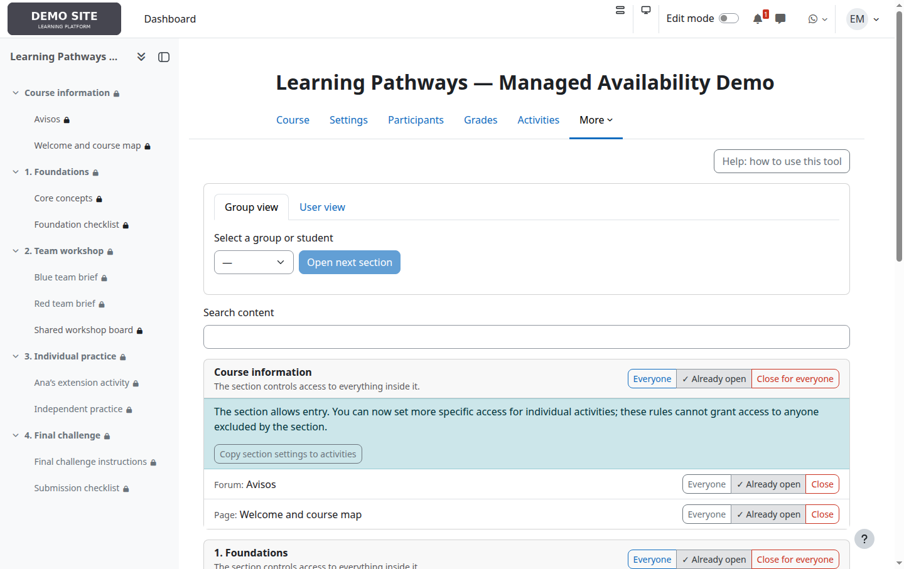
3. Closed section: content cannot be reached
A section with no target is closed. Moodle prevents access to everything inside, so activity controls disappear and one explanation is shown. Inner rules remain stored and return when the section is reopened.
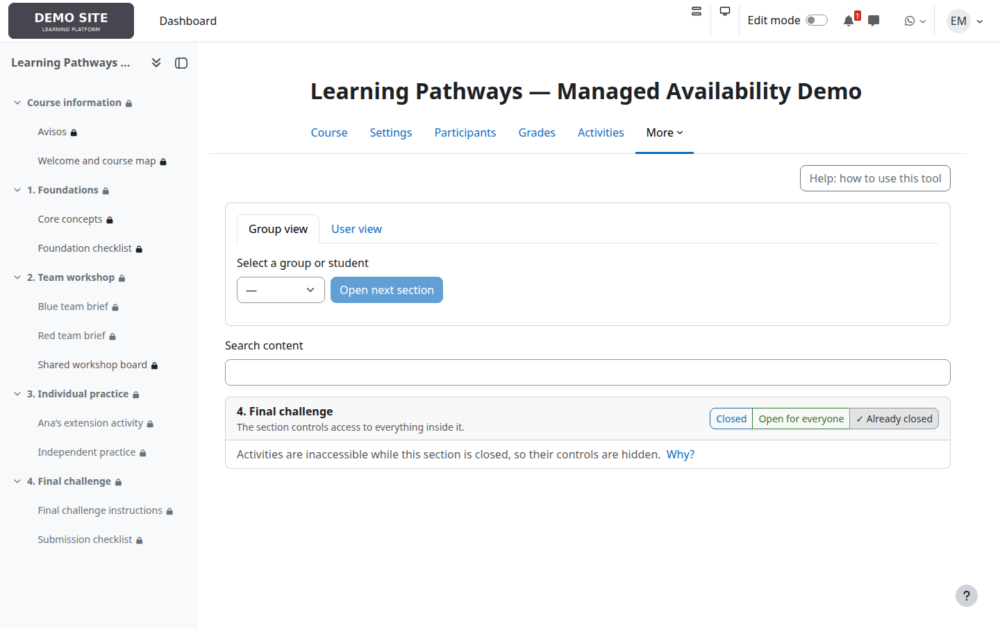
4. Open section: more specific rules inside
The Team workshop admits Blue and Red teams. Its briefs then restrict access to one team each, while the shared board is open to everyone already admitted by the section.
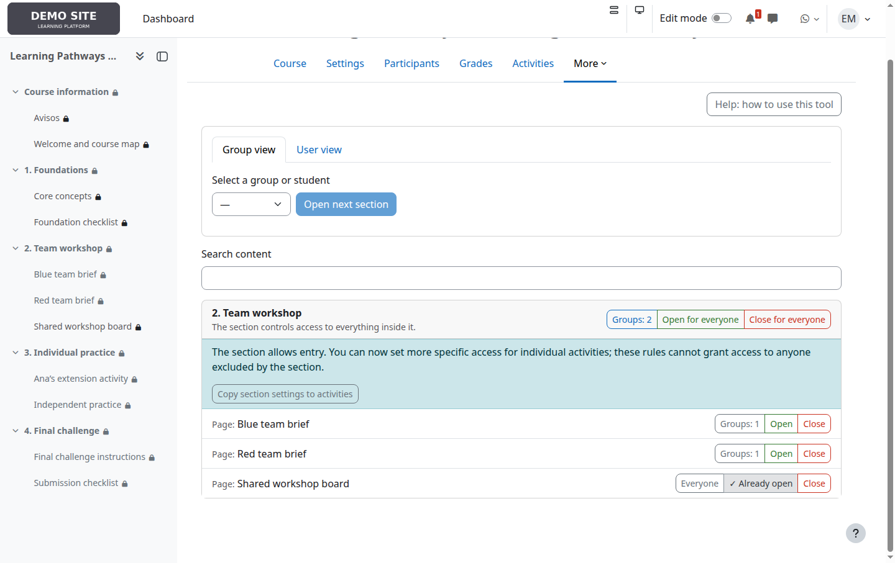
5. Select targets
Select the state button and choose Everyone, one or more groups, or individual students. Groups and students combine with OR. Moodle checks current group membership on every access.
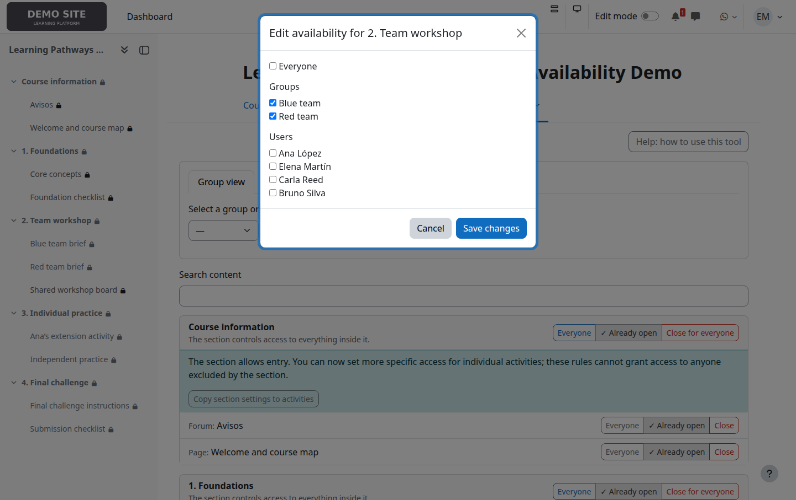
6. Copy a section to its activities
Copy section settings to activities is a confirmed, one-time replacement of every activity's managed rule. It is not inheritance or synchronization, and it is not needed merely to block a closed section.
7. Review a group or student's pathway
Group view and User view summarize open sections for one target. Open next section manually releases the first closed section; it does not inspect grades or completion.
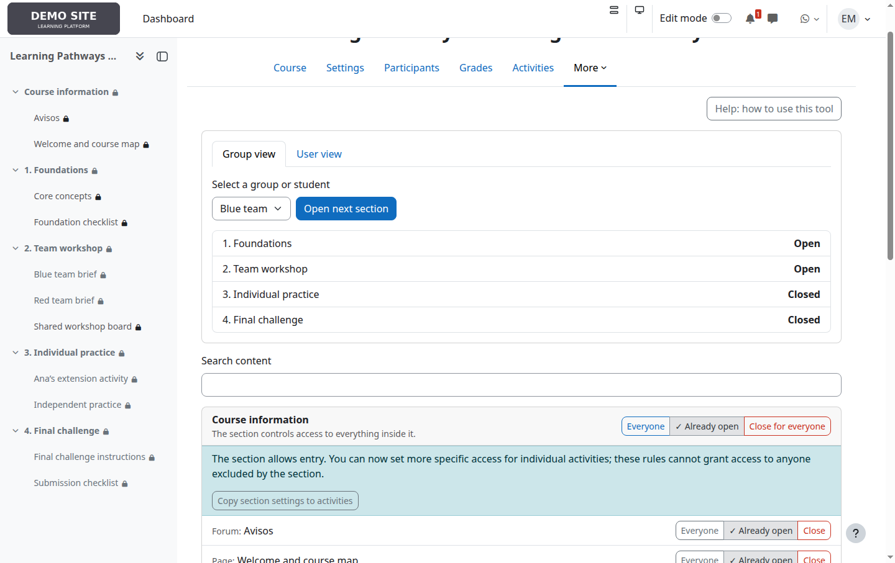
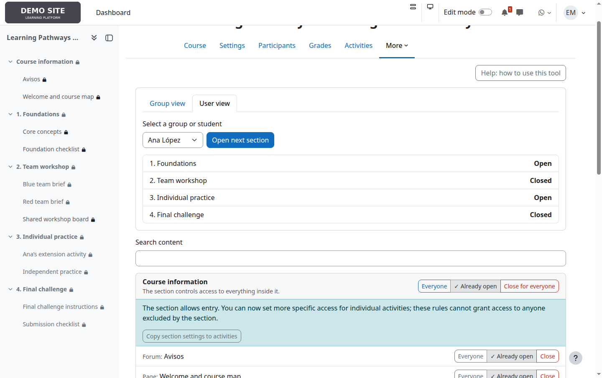
8. Check the student experience
Ana belongs to Blue team and has an individual release; Bruno belongs to Red team. The same rules therefore produce different course navigation.
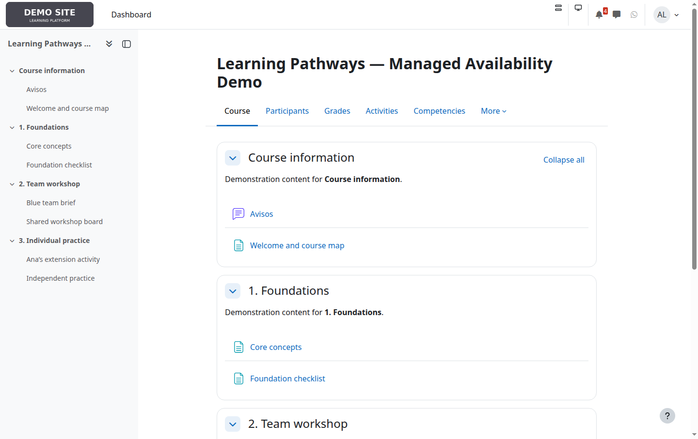
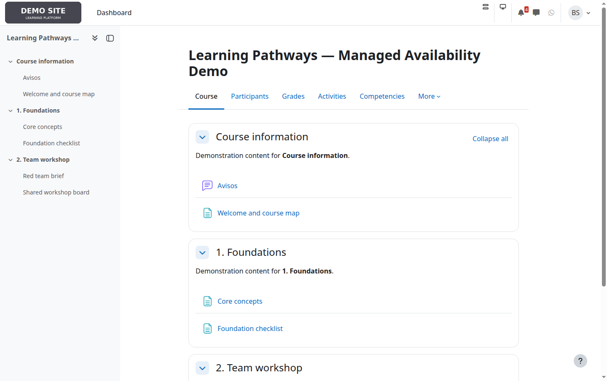
Use student accounts to verify important combinations of section, activity, and standard Moodle restrictions.
9. Use the integrated help
The course help screen explains targets, quick actions, copying, manual progression, and precautions without leaving the course context.
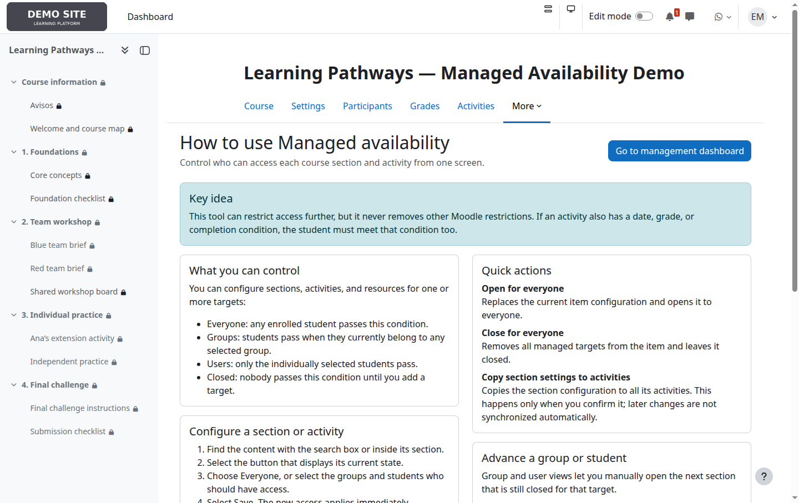
10. Review the audit log
Authorized users can inspect who changed an item, when, and its previous and new states. This is useful after bulk actions or when investigating unexpected access.
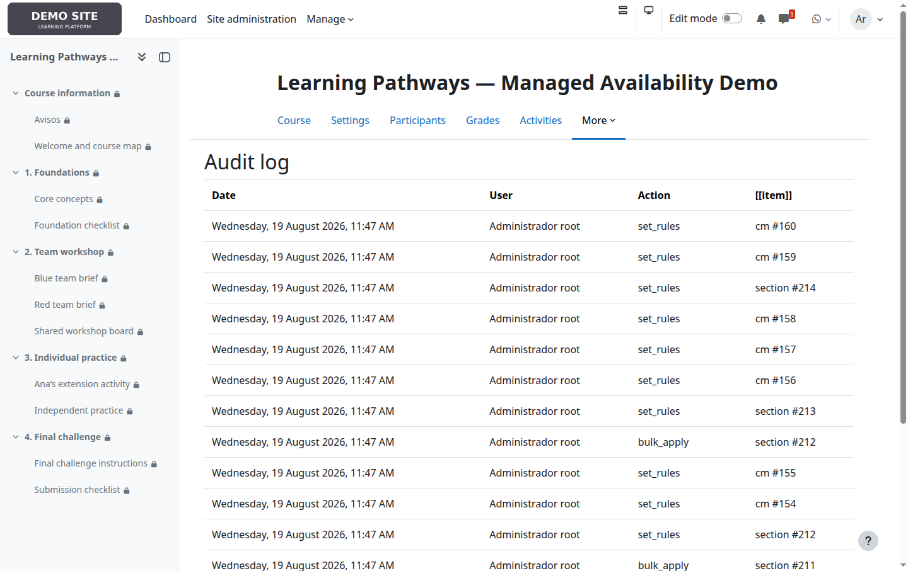
Common situations
| Goal | Recommended configuration |
|---|---|
| Open a unit to everyone | Open the section to everyone; restrict only activities that need an exception. |
| Release by teams | Select groups on the section, then configure activities only when teams need different material. |
| Exceptional access | Add the student to the section and to any restricted activity they also need. |
| Hide a whole unit | Close the section; do not close every activity separately. |
| Pause site-wide | Use global suspension, which retains rules. Do not disable each course. |